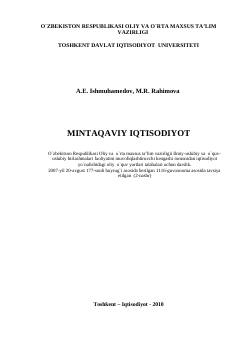

MIMintaqaviy iqtisodiyot fanining nazariy va amaliy asoslariga bag'ishlangan oliy o'quv yurtlari uchun darslik.
Mazkur darslikda mintaqaviy iqtisodiyotning nazariy va amaliy asoslari, mintaqaviy siyosat, ishlab chiqarish kuchlarini joylashtirish hamda tabiiy resurslardan foydalanish masalalari yoritilgan. Shuningdek, hududiy sanoat, agrosanoat majmuasi va mehnat bozorini rivojlantirishning o'ziga xos xususiyatlari ochib berilgan.